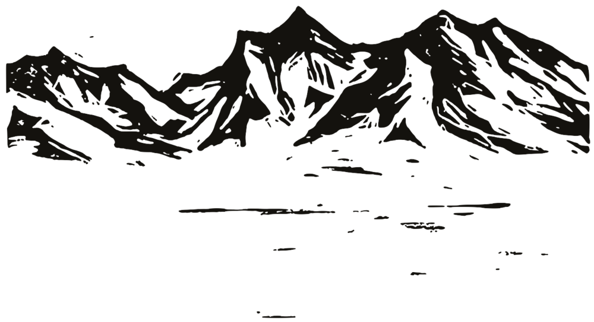

Podcast thumbnail workshop
A place to mock up podcast thumbnails and test them against each other. Every version carries the same three things: a big quote, the guest's name in smaller type, and our logo in a corner. Type your own episode into the fields and every artboard on this page updates.
What makes a thumbnail work
Most people meet a video at 168 to 360 pixels wide, scrolling past it in under a second. Each of these follows from that.
- It has to read at 168px.The "up next" sidebar and phones show thumbnails tiny. If the quote doesn't read there, it doesn't work. Squint at it: what's left is what people see.
- One focal point, three elements.A face, a few words, a ground. The logo is a small fourth. Everything else (dates, taglines, URLs) is noise at feed size.
- A big face that shows something.Faces are the first thing the eye lands on. Head and shoulders, eyes about a third down the frame, an expression that matches the quote. A face filling half the height is a good minimum.
- Few words, very big.Three to six words, at most three lines. The video title and the thumbnail are a pair: the title names the guest and the idea, the thumbnail carries the hook. Don't repeat the title.
- Contrast in light and dark, not just colour.White on night or ink on sunlight. Two colours of similar lightness vanish when small. Turn on greyscale in the panel: if the words still jump out, the contrast is right.
- The ground is the brand.The logo is about 13px wide in the sidebar, so nobody recognises us by it. They recognise the pattern: same ground, same type, same logo corner, every episode. Pick one and keep it.
- Keep clear of YouTube's furniture.The duration badge covers the bottom-right corner, a red progress bar runs along the bottom of watched videos, and corners are rounded. No words or faces there.
- Stand apart from the feed.YouTube's page is white or near-black. A night ground disappears into dark mode; paper disappears into light mode. A photo or sunlight ground stands out in both.
- Test with real viewers.YouTube Studio's Test & Compare runs up to three thumbnails on one video and reports which got the most watch time. Use it to settle a debate between two variants below.
Build one, step by step
The order matters: words first, because no design rescues a weak quote; then the brand ground, which stays fixed; then the guest, the type and the small parts; then test at real size. The artboards use variant A below.
Pick the words
Listen back for a phrase the guest actually says, three to six words, that makes you curious. Write it on a blank card. If it doesn't pull you in as plain text, nothing else will save it.
- A claim or an image beats a topic: "We are already practising it", not "On practice".
- Write three candidates and pick one. Keep the others for Test & Compare.
- No question we answer with "you won't believe". See voice.md.
We are already practising it
Lay the brand ground
This is the part that never changes between episodes, so choose it once and carefully. Here: the night ground with a chalk linocut range along the bottom.
- Keep it quiet in the middle and left, where the words will go.
- Texture and print marks give it our hand; flat colour would look like anyone's.
- Variants B to D try other grounds.
Place the guest
Big, on the right, head near the top. Greyscale, so every guest's photo sits on the same ground whatever the lighting was. The left edge fades into the night.
- Face fills at least half the height; eyes about a third down.
- Pick a frame with eye contact or a clear expression.
- Keep the chin and shoulders out of the bottom-right badge zone where you can.
Set the quote
The largest thing on the artboard: Polyamine at about 116px, white on night, left aligned, at most three lines. Balance the lines so no word sits alone.
- If it runs to four lines, cut words before you shrink the type.
- Leave a clear gap between the quote and the face.
Add the name and the logo
The guest's name under the quote at about half its size. The logo on its white disc in the top-left corner, the same corner every time. The episode label beside it is optional.
- Top-left, because the bottom-right belongs to the duration badge.
- An episode number helps people watching in order, not new viewers. Try it with and without (clear the field).
Test it at real size
Look at it the way viewers will: 360px in the home feed, 168px in "up next", in light and dark mode, and in greyscale. Can you read the quote at 168px? Can you tell it's us before reading anything?
- If the name doesn't read at 168px, that's fine as long as the face does the work.
- Then compare against the variants below and in the feed at the bottom.
Six variants to test
All six keep the quote, the guest name and the logo in the top-left corner. They differ in the ground and in how much space goes to the face versus the words. Toggle the duration badge and keep-clear zones in the panel.

We are already practising it
.thumb--guest: a mountain photo under a dark shade. The baseline to beat. Logo bottom-left with the podcast name.We are already practising it
We are already practising it
In the feed
The same six at real size, in YouTube's light and dark home feed and in the "up next" sidebar at 168px. This is the view to judge them by.